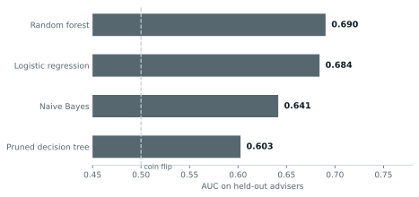
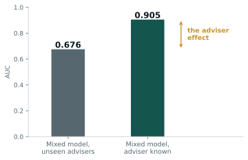

01 / 06
The question
NEOS is a life insurer that sells nothing directly. Every policy goes through a financial adviser, so the client's question was how to get NEOS higher on advisers' recommendation lists.
That splits into one testable question: is a NEOS recommendation driven by the customer sitting in front of the adviser, or by the adviser? The answer decides where the money goes, into consumer marketing and pricing, or into adviser relationships.
02 / 06
Data and method
The starting dataset was 162,937 IRESS recommendation records covering customer profiles, products, premiums and adviser IDs.
The first real finding came before any modelling. NEOS appeared in 0 of 75,218 hybrid-commission rows and 0 of 7,670 nil rows, which is not a market pattern, it is a data artefact. Commission labels are formatted by each insurer, so 183 of 187 labels map to exactly one company. Left in, commission predicts NEOS at AUC 1.00 and the model learns nothing. We dropped it and scoped to the upfront and level segment where NEOS actually competes against AIA, ClearView, BT and Zurich. That left 66,019 recommendations across 4,999 advisers, at a 30% NEOS rate.
We split 70/30 by adviser rather than by row. A random row split puts the same adviser on both sides, so the model scores well by recognising advisers instead of learning anything, and NEOS's real problem is advisers it has not converted yet. We ranked on AUC, not accuracy, because at a 30% base rate a model that always says no scores 70%.
Four baselines: logistic regression, a pruned decision tree, random forest and naive Bayes. They were chosen to fail differently, from rigid and interpretable to flexible and opaque.
03 / 06
Results

| Model | AUC | Sensitivity |
|---|---|---|
| Random forest | 0.690 | 21% |
| Logistic regression | 0.684 | 20% |
| Naive Bayes | 0.642 | 43% |
| Pruned decision tree | 0.603 | 18% |
Random forest beat logistic by 0.006, which is nothing. A 200-tree ensemble found essentially what a linear model found. Sensitivity sat near 20%, so the best model missed four out of five NEOS recommendations.
When four algorithms with different assumptions plateau together, the constraint is the information, not the algorithm. So I tested what was missing directly. All 18 customer and product features together gave AUC 0.684. Adviser identity alone, using a leave-one-out tendency that excludes the row being predicted, gave 0.863. And 65.8% of advisers were all-or-nothing: they either always recommend NEOS or never have.
04 / 06
Why adviser identity could not just be added
This was the part that took the longest. Adviser ID does not go into these models as a feature for four separate reasons. R's random forest caps categorical predictors at 53 levels and we had 4,999. Validation advisers never appear in training, so there is no fitted coefficient to predict with. As dummy variables, 4,999 columns where two thirds of advisers are all-or-nothing produces quasi-separation, and the coefficients run to infinity. And there is not enough data per adviser: the median is five recommendations, half have five or fewer, 18% have exactly one.
A random intercept solves all four. It estimates one parameter, how much advisers vary as a group, instead of 4,999. It applies to advisers the model has never seen. And it shrinks thinly observed advisers toward the average in proportion to how little data they have.
05 / 06
What I concluded
I fit the mixed-effects model on the same 66,019 rows, same features, dropping adviser volume since the random intercept absorbs it.
With nothing but the adviser in the model, the intraclass correlation is 0.737. Adding every customer and product feature we had, age, gender, income, occupation, product mix, cover, price, moved it only to 0.673. All of that data explains about a quarter of the adviser gap.

So the adviser is not one factor among many, it is roughly two thirds of the picture. The typical adviser recommends NEOS 6.4% of the time against a 30% segment rate, meaning the average is carried by a NEOS-heavy minority.
The recommendation follows: win advisers, not cases. Target the advisers who already recommend NEOS occasionally, since they are the shortest path, rather than spending on consumer marketing that never reaches the actual decision-maker.
06 / 06
What I would do differently
The dataset had no adviser-level variables at all: no panel membership, prior insurer relationships, service history or underwriting experience. We proved the adviser effect exists and sized it, but we could not explain it. That is the obvious next dataset to ask NEOS for.
The data is also observational. Premium came out as a strong customer-level predictor, but that does not mean cutting premiums lifts recommendations.